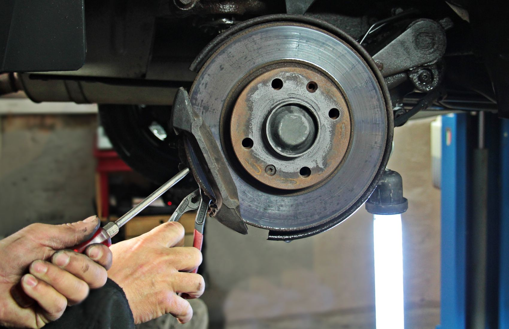
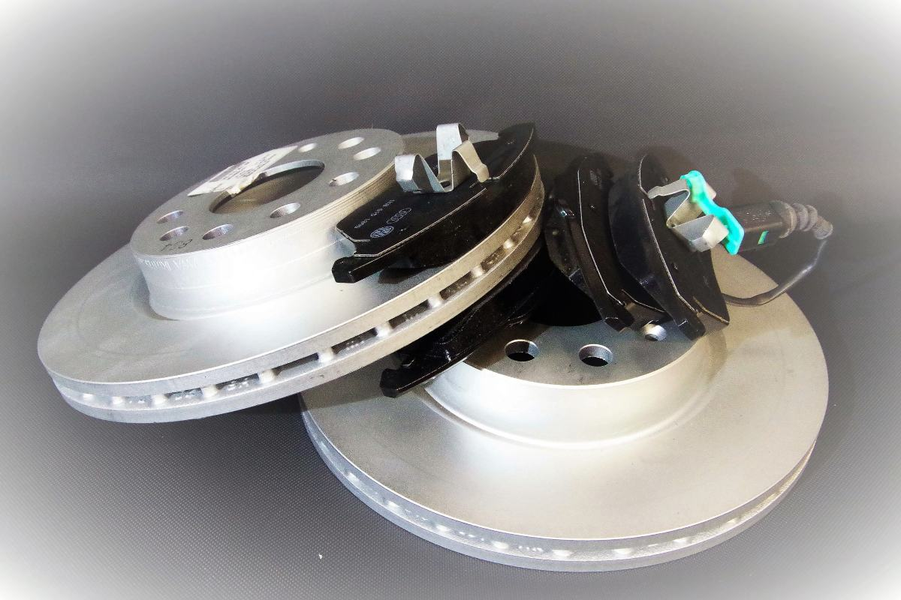
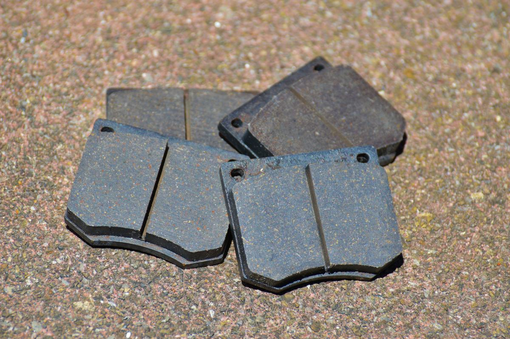

Un chillido agudo al frenar
Muchas pastillas traen una lengüeta metálica que empieza a rozar cuando queda poco material. Ese chillido es el aviso, no la falla: llegó justo a tiempo.
Pucón · Región de La Araucanía
En Pucón el freno trabaja distinto que en la ciudad. Bajadas largas, curvas seguidas, autos cargados y muchos que llegan de vacaciones sin haber revisado nada. Un freno que en Temuco dura dos años, acá dura menos, y eso no lo dice ningún manual.
01 — La pieza de esta página
El freno convierte el movimiento en calor. En una bajada larga ese calor no alcanza a irse, y llega un punto en que el pedal se siente igual y el auto frena menos. No es que el freno se haya roto: está caliente. Saber esto cambia cómo se baja, y cambia también qué se le pide al taller antes de salir.
01
Es la regla de siempre y sigue siendo la mejor: el motor frena y no se calienta. Si para subir esa cuesta habría usado segunda, baje en segunda. El freno queda para las correcciones, no para sostener el auto todo el camino.
02
Ir «a media pisada» todo el rato es lo que más calienta, y además es lo que menos se nota que uno está haciendo. Conviene frenar firme y corto, soltar, y dejar que se enfríe entre una frenada y otra.
03
Ese olor es el material de la pastilla. Deténgase en un lugar seguro y deje enfriar solo, sin echarle agua: el agua fría sobre un disco caliente lo puede dejar torcido para siempre. Enfriar toma minutos, no segundos.
04
Eso no se arregla andando y no vuelve solo. Es el momento de detenerse y pedir ayuda, aunque falte poco. Es la única línea de esta página que no admite matices.
05
Con la familia, las maletas y a veces un carro atrás, el mismo camino pide bastante más freno. Si el auto va cargado y la bajada es larga, conviene bajar una marcha más de lo que uno bajaría solo.
06
La revisión de frenos es de las pocas cosas del auto que conviene hacer antes del viaje. Después del viaje también sirve, pero ya no evitó nada.
Esto es conocimiento general de manejo, escrito por mí, y no reemplaza ninguna revisión. Ante cualquier duda sobre el freno de su auto, lo correcto es detenerse y hacerlo revisar, no seguir andando con una explicación de internet. Tampoco hay acá ninguna instrucción de desarme: nada de lo que se propone se hace con herramientas.
El freno no falla en la subida.
Falla veinte curvas después.
02 — Lo que el auto avisa
Los frenos avisan casi siempre, y casi siempre por el oído o por el pie. Seis señales que cualquiera reconoce sin abrir nada, y una que no avisa: por eso está la última.
Muchas pastillas traen una lengüeta metálica que empieza a rozar cuando queda poco material. Ese chillido es el aviso, no la falla: llegó justo a tiempo.
Distinto del anterior: suena a fierro contra fierro. Ahí la pastilla ya se acabó y está trabajando el soporte contra el disco. Eso raya el disco, y lo que era un cambio barato deja de serlo.
Suele ser un disco alabeado —torcido por calor—. Se nota más frenando desde velocidad alta, y es exactamente lo que provoca una bajada larga mal hecha.
Aire en el sistema, líquido en mal estado o una fuga. Es la señal más seria de todas y no conviene postergarla ni un día.
Un lado está frenando más que el otro. Puede ser una pinza pegada, y una pinza pegada además calienta esa rueda todo el viaje.
El líquido de freno no se consume: si bajó, o se gastó pastilla o hay una fuga. Las dos cosas se miran, no se rellenan y se olvidan.
La que no avisa
Casi nadie lo sabe: todo disco de freno viene con su espesor mínimo grabado de fábrica en el canto. Es un número, viene marcado en el propio fierro, y no lo puso el taller. Cuando el disco llega a esa medida ya no se rectifica: se cambia, porque más delgado disipa menos calor y se alabea antes.
Es el mejor dato que existe en este rubro para un cliente desconfiado, y por eso vale la pena que esté escrito en la página: no hay que creerle a nadie, el disco lo dice solo. Pedir que se lo muestren es completamente razonable.
Acá no va ninguna cifra a propósito: el número es distinto en cada disco y lo trae grabado el suyo.
47 reseñas en Google
4,9 en un rubro donde nadie recomienda por simpatía.

03 — Lo que sí y lo que no
No todo disco rayado se cambia y no todo disco se puede rectificar. Rectificar saca material, y sacar material sólo se puede mientras quede margen sobre esa medida grabada. Un disco al límite rectificado es un disco que va a fallar en la próxima bajada larga.
Y al revés: hay discos con marcas superficiales que están perfectos, y cambiarlos es gasto puro. Un taller que dice las dos cosas es el que conviene.
Lista de ejemplo de lo que suele cubrir un especialista en frenos. Qué hace Frenos Salazar de verdad, en qué vehículos y si tiene rectificadora propia, lo completa el negocio: está armada y vacía a propósito. Y no hay ni un precio ni un plazo en toda la página, porque dependen del auto.
04 — Dónde trabaja el freno


05 — Contacto
Si viene de paso y sale mañana temprano, dígalo al llamar: es el caso en que el orden importa más que el presupuesto.
Las cinco líneas en cursiva son las que hay que llenar antes de publicar. «¿Rectifica discos?» es la que más consultas trae: quien pregunta eso ya sabe lo que necesita y llama al primero que lo diga por escrito.
Para el dueño de Frenos Salazar
Cuarenta y siete reseñas con 4,9 en frenos no se consiguen por casualidad: eso es gente que confió en un rubro donde equivocarse se paga caro y volvió a decirlo. Es el activo más difícil de construir de todos.
Lo que falta es dónde apoyarlo. Una ficha de Google muestra la nota pero no muestra por qué. Una página que explique cómo se baja el volcán y qué trae grabado un disco hace algo que la nota no puede: convence al que todavía no lo conoce.